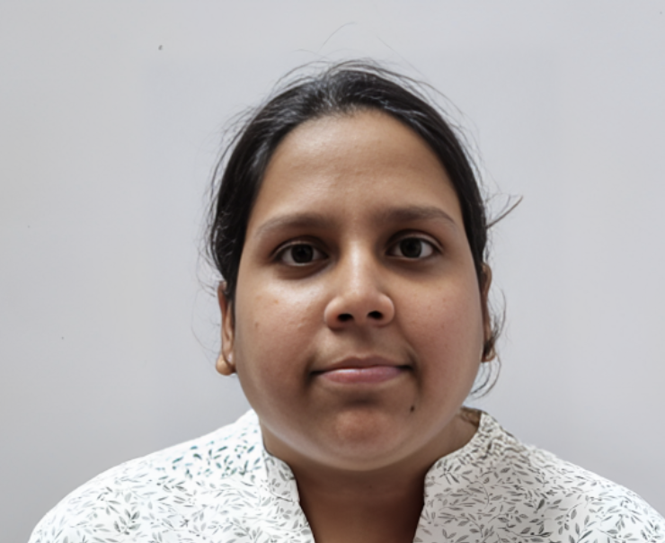

Samreen Kazi
IT Engineer | Web Developer | Blockchain Enthusiast | Published IEEE & Springer Author
About
Hi! I’m the person who took the road less traveled in IT - starting with a diploma and elevating to a Bachelor’s in Engineering,
all while juggling internships, web development projects, and groundbreaking research on blockchain and NFTs. 🎖️
Transforming abstract ideas into tangible solutions is what I live for. Whether it's designing user-friendly websites or decrypting
the complexities of blockchain, I approach each project with a problem-solver mindset.
My academic contributions to IEEE and Springer are a testament to my relentless curiosity and desire to push boundaries. 📘
More than just a developer, I consider myself a storyteller, where each line of code adds to the narrative of innovation.
My internships have been instrumental in shaping my perspective, empowering me to approach challenges with optimism and resilience. 🔍
As I steer through the evolving landscapes of technology, my goal remains unwavering: to make an indelible mark on the digital world. 🚀
Education
- University of Mumbai, Bachelor of Engineering, Information Technology, 2023
- Maharahstra State Board of Education, Diploma, Information Technology, 2020
Work Experience
- Marketing and Business Development Intern (The Climber, My Captain, 2021)
- Worked as the campus ambassador for MyCaptain.
- Responsible for the marketing and brand visibility on campus.
- Web Development Intern, (Vidyalankar Institute of Technology, 2021)
- Built a user-friendly web interface using HTML, CSS, and JavaScript to facilitate easy interaction with the system.
- Utilized PHP for the server-side scripting and MySQL for the database to ensure efficient data storage and retrieval.
- Web Development Intern (Sunarj Technologies, 2019)
- Implemented interactive elements such as forms, sliders, and navigation menus to enhance user engagement.
- Developed responsive designs using Bootstrap, that function effectively on various screen sizes and devices.
Skills
- HTML
- CSS
- JavaScript
- Bootstrap
- Blockchain